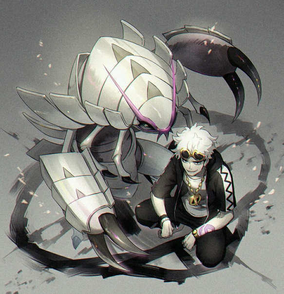

Informações sobre o Golisopod
Golisopod é o pokemon de numero 768 seus tipos são agua e inseto ele e a evolução do pokemon wimpod que evolui no nivel 30 por ser do tipo inseto e agua ele e forte contra poucos tipos mas tem varias fraquezas.
Sua altura e de 2 metros e seu peso pode chegar 108kg sua unica habilidade é saida de emergencia que quando golisopd chega 25% de sua vida ele sai da batalha sendo trocado por outro pokemon do time.Seus stadus são focados em sua defesa e ataque fisicos em contrapartida ele e muito lento.
O unico treinador importante a usalo nos jogos e no anime e Guzma que e o lider do team skull time vilão dos jogos sun e moon e ultra sun e ultra moon.A região da qual ele pertence é alola.